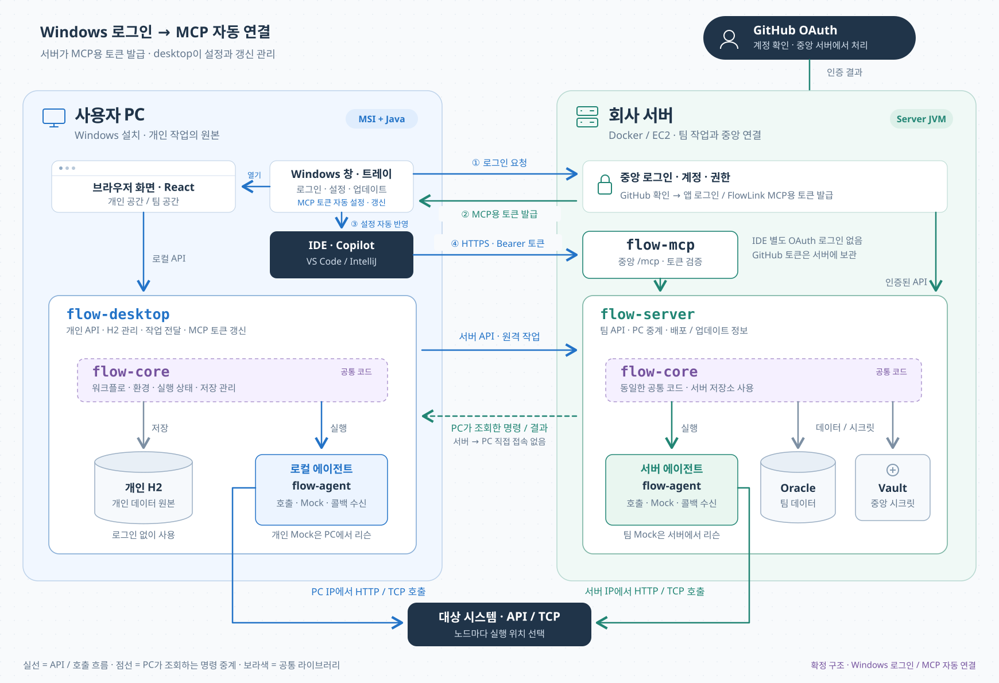

FlowLink 아키텍처
Windows 로그인 → MCP 토큰 발급 → IDE 자동 연결


구현과 검증 범위
구현: flow-agent, flow-core, flow-server, flow-desktop, flow-mcp 다섯 모듈입니다. desktop과 server가 공통 core를 사용하며 desktop은 server 소스에 의존하지 않습니다. 작업 화면과 SPA 라우팅은 desktop에만 포함하며 중앙 서버는 인증·API·MCP·다운로드를 제공합니다. 플러그인은 개인 H2와 중앙 DB, 호스트별 승인본 레지스트리로 분리됩니다.
확정 연결 방식: Windows 앱에서 한 번 로그인하면 중앙 서버가 GitHub 인증을 처리하고 앱 로그인과 FlowLink MCP용 토큰을 발급합니다. desktop이 IDE 사용자 설정에 중앙 /mcp 주소와 Authorization: Bearer 토큰을 자동 반영합니다. IDE는 별도 OAuth 로그인 없이 연결하며 GitHub 토큰은 중앙 서버에 보관합니다.
토큰 관리: MCP용 토큰의 만료·재발급·폐기는 서버가 담당하고 desktop이 설정 갱신을 관리합니다. 설정은 IDE 사용자 범위에 두고 기존 MCP 목록을 보존합니다. IDE가 설정 재적용을 요구하면 앱에서 안내합니다. IDE 자체의 서버 신뢰 확인은 남을 수 있습니다.
모듈: 공통 관리·엔티티·저장 구현은 flow-core에 있습니다. desktop → server 소스 의존을 제거했습니다. 개인 데이터는 H2, 팀 데이터는 Oracle에 유지합니다. MCP 프로토콜·도구 호출·IDE 등록 검증은 수행하지 않았습니다.